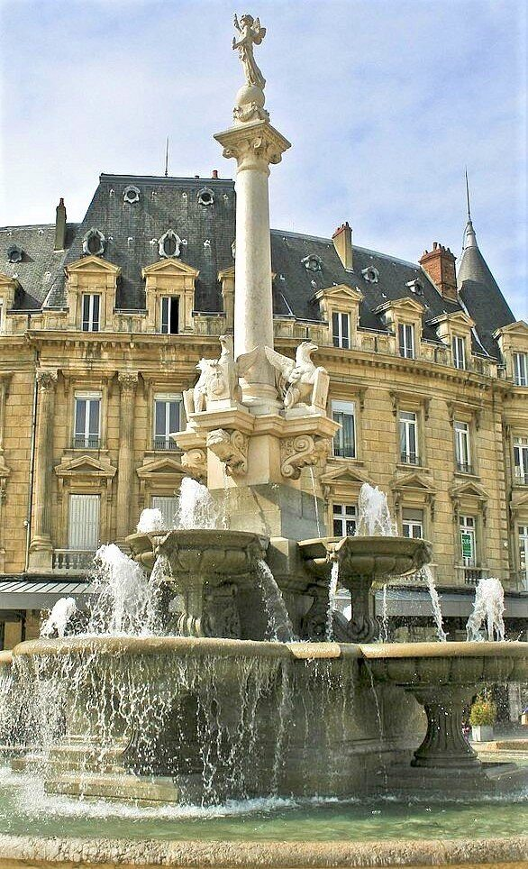

Préfecture de la Drôme, Valence fait face à l'Ardèche de l'autre côté du Rhône, dominée par la silhouette du Château de Crussol. À environ 35 minutes des Cabritas, c'est une ville à taille humaine, agréable à découvrir à pied le temps d'une demi-journée.

Le Kiosque Peynet, symbole de la ville
Construit en 1862 et classé monument historique depuis 1982, le Kiosque Peynet surplombe le parc Jouvet. Il doit sa renommée mondiale au dessinateur Raymond Peynet qui, de passage à Valence, s'en inspira pour croquer un petit violoniste jouant pour son admiratrice : ces personnages, devenus « Les Amoureux de Peynet », ont connu un succès international.
Flâner dans le centre historique
Le Champ de Mars, place centrale incontournable, offre une perspective magnifique sur les collines ardéchoises, le parc Jouvet et le Château de Crussol. Le parc Jouvet lui-même, avec ses 7 hectares de pelouses, ses arbres centenaires et ses fontaines, est un véritable poumon vert idéal pour une pause en famille. Ne manquez pas non plus la Maison des Têtes, ornée de nombreuses têtes sculptées, ni la Cathédrale Saint-Apollinaire, plus ancien édifice de la ville.
Bon à savoir avant votre visite
Le centre-ville, compact et piéton par endroits, se prête bien à une visite d'une demi-journée. Valence se combine idéalement avec le Château de Crussol, juste en face sur la rive ardéchoise, pour une journée complète alliant balade urbaine et patrimoine médiéval.
Infos pratiques depuis Les Cabritas
- Distance depuis Flaviac : environ 35 min de route
- Meilleure période : toute l'année
- Idéal pour : balade urbaine, culture, gastronomie
Envie de découvrir Valence depuis votre gîte en Ardèche ?
Les Cabritas vous accueillent à Flaviac, au cœur de l'Ardèche, pour un séjour confortable avec piscine privée, à deux pas des plus beaux sites de la région.
Vérifier les disponibilités